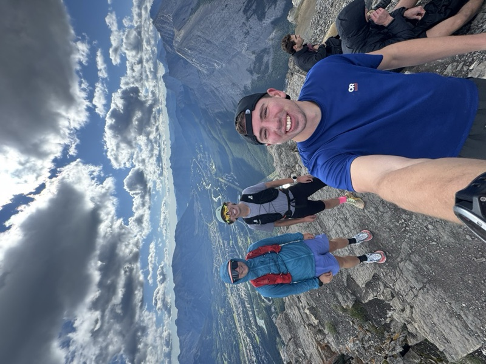

But before we get started, let me introduce myself . . .
Josh Tillson
Product Manager, Caylent
Current Role
Product @ Caylent
Education
Computer Science and Business @ UBC
Hometown
Sudbury, ON

Intro
Thrives at the intersection of technology and business
A range of experience across tech strategy, technical product management, software development, and cybersecurity
Most recently, product owner at Pennymac, leading development of a data interface layer for an internal tool they were commercializing
Fun Facts
Favourite season is winter
Irrationally afraid of birds (but not bears)
Big fan of podcasts and audiobooks (ask me for a rec)
Outside of work you'll catch me hiking, running, cross-country skiing, working out, and being a proud plant dad
Where we're starting
Where Meridian is today
A $195M, 380-person business with a board-level mandate and licenses already paid for, but a finance team with no time to work out where Claude fits.
11 months ago
PE sponsor acquires Meridian
"AI-enabled operations" goes into the value-creation thesis
6 months ago
Claude Enterprise, org-wide
Finance attends a mandatory 1-hour orientation
Ever since
FP&A adoption near zero
"I just don't see how it applies to what we do."
Today
Kickoff with David + 2 analysts
The conversation we're having right now
FP&A: 8 analysts, back-to-back deliverables
Monthly closeBudget vs. actualsVariance analysisManagement reportingQuarterly board narrative
The same cycle every month, with a board quarter on top.
PE sponsor
Expects results. "AI-enabled finance" isn't defined yet.
David Okafor, Director of FP&A
Unsure where to start. Tried a few prompts and got mixed results.
Analysts
Heads-down. "Our work is numbers-based and requires judgment."
Don't know yet: Is low adoption an FP&A problem or an org-wide one? What did the orientation give them? And what does the PE sponsor mean by "AI-enabled finance"?
01 · The problem
No time to set Claude up, and no proof it would pay off
Getting Claude to handle FP&A work takes hours of setup, and the team would have to find those hours in a full month for a payoff nobody has shown them. Six months after rollout, adoption sits near zero.
1
No time to set it up
Close, budget vs. actuals, reporting, and board prep run back to back.
Setup means picking the right task, writing prompts, and testing them on real numbers.
The one-hour orientation covered Claude in general, with nothing on FP&A work.
2
No proof it pays off
David tried a few prompts on his own and got mixed results.
The team's view: "Our work is numbers-based and requires judgment."
An analyst with a full month won't spend setup hours on a tool with no track record in their work.
Bringing in Caylent removes both blockers
We carry the setup
Caylent runs the interviews, writes the prompts, and builds the first workflow. Each analyst gives about 30 minutes in week 1.
We prove the payoff first
In week 2, each analyst judges a draft of their own recent work. We build from patterns peer finance teams use today.
02 · What we've seen elsewhere
Finance teams already use Claude for the first pass
Claude drafts, and the analyst checks and decides. Anthropic recommends this pattern for finance teams.
Meridian's work, with a first pass
Monthly closeChecklist run, exceptions flagged
Budget vs. actualsReconciliation checks, mismatches surfaced
Variance analysisFirst-draft commentary on the drivers
Management reportingReport assembled from the template
Board narrativeDraft from last quarter + new actuals
Hypothesis: Meridian's own systems, review points, and data rules may shift where the first pass lands. Discovery confirms it.
10–20 hrs
Anthropic's own finance team, per week
Variance vs. forecast, board-deck consistency. "I edit from there."
~20%
NBIM, Norway's sovereign wealth fund
Productivity gain, backed by a 50-person AI Ambassador network
>5x
AIG, global insurer
Faster underwriting review; data accuracy from 75% to over 90%
Kickoff lands the day before Q3 quarter-end, which makes week 1 their busiest week. We spend it listening and hold the workshop until close is done.
Q3 close · business days 1–7Q3 board prep? · confirm at kickoff
Day 0
Kick off
Confirm the close and board calendar
Name champions
Book interviews and the workshop
Team time: 60 min · David + 2
Week 1
Listen
During Q3 close
30-min 1:1s, scheduled around close
Shadow one close task
Collect templates and last packs
Talk to teams already using Claude
Team time: 30 min per person
Week 2
Discover
After close wraps
Discovery workshop, after close
Live first pass on Q3 numbers
Pick one workflow, with David
Team time: 90-min workshop
Week 3
Build
The following week
Project, Skill, and prompt kit
Demo to champions twice
Iterate on their feedback
Team time: 2 × 20-min demos
Week 4
Adopt
Final week
Champions run it on real work
Measure keep-rate and hours
Readout and next-workflow backlog
Team time: 30-min readout
BuildDemoFeedbackIterate
Day 30Draft keep-rateHours saved per cycleUnprompted use
Close window and board date are assumptions. We'll confirm them with David today. Champions own the workflow by day 30.
04 · The discovery motion
Discovery starts with a task they did last week
The team has done this work for so long that the pain is hard to name. A step-by-step walkthrough of a recent task brings it out.
01
Walk through a task
A recent variance write-up, step by step
02
Mark each step
Judgment or assembly?
03
Draft a first pass
Live, on their own numbers
04
Analysts review it
They correct or reject the draft
05
Choose a workflow
Scored on ROI and risk
Open questions
Is low adoption FP&A-only, or org-wide?
Did orientation give them a toolkit, or a tour?
Which work do they redo every month?
What does close run on: Excel, ERP, planning tools?
Where do reviews already happen, and who does them?
Picking the first workflow
Frequent. Runs every month.
Standard shape. Same steps every cycle.
Already reviewed before it ships.
Low blast radius if a draft is wrong.
Goal for the session: each analyst sees a draft of their own recent work and decides what's wrong with it.
05 · Immediate next steps
Immediate next steps for the FP&A team
Coming out of kickoff, the work splits cleanly: what we take on right away, and the handful of decisions only the team can make.
What we're going to do
Proof from peers
Real finance examples, including Anthropic's own team.
We carry the legwork
Interviews, synthesis, and the build. The team's time stays light.
Draft-then-verify, stated up front
A human reviews every draft. That's the model from day one, not a workaround we add later.
One quick, high-ROI win
A workflow the team is using within weeks.
Language for reporting up
A short, accurate update leadership can stand behind.
What we ask of the FP&A team at kickoff
Champions
Are today's two analysts the right ones? Who else should be?
Define "AI-enabled finance"
What does the PE sponsor mean by it? Loop in leadership or the PE team on measurable ROI.
Interviews
Which analysts, plus any team already using Claude well?
Discovery session
Who should be in the room?
Timing
When do close and board prep peak? When is a workshop safe?
Ways of working & access
Cadence, channel, and who decides, plus the last variance pack, templates, and Claude usage data.
The team leaves kickoff with a one-page 30-day plan with dates, named champions, and the next meetings booked.
06 · Beyond activation
P1 → P2: from prompts to agentic workflows
Activation proves one workflow and hands it to the team. Then we can automate that workflow up to the review step.
P1 · Claude Activation · this engagement
Equip the team
Skills, a shared Project, and ways of working inside Claude, so the team can share what works and use it well themselves: paste a prompt or run a Skill, review the draft, make the call.
P2 · Agentic workflows & automation · next
Automate the workflow
Once a workflow is proven and owned, we connect Claude to the data and put it on a schedule. The draft is ready before anyone asks, and the analyst still reviews it before it ships.
Anthropic's own Month-end closer agent, and Campfire (an accounting platform built on Claude), already run this pattern, closing 3 days faster with 90% less reconciliation time.
For the sponsor, "AI-enabled finance" gets a threshold: the team owns a workflow (P1), then we automate it (P2).